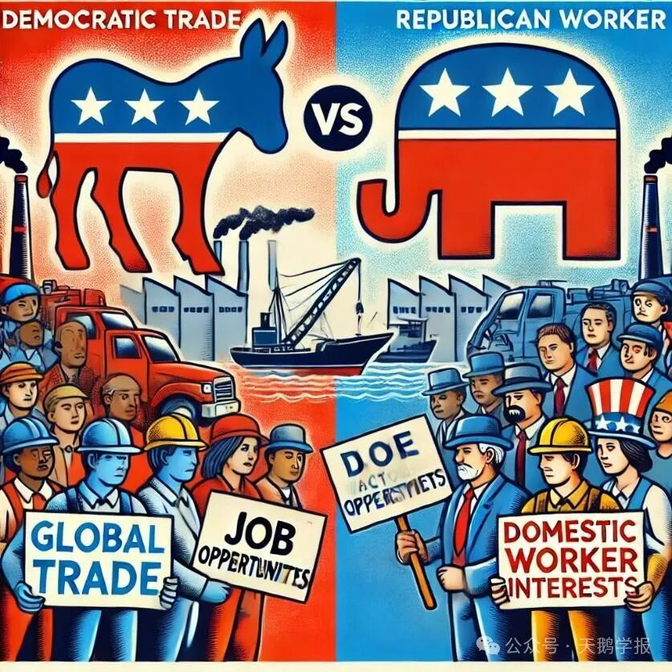

李嘉图在19世纪为全世界的分配问题出谋划策，但其实早在战国时代的中国，便深知比较优势的思想精髓。田忌用三匹马点出了强弱之分，胜在谋略权衡之道，影响着后世的决策家与军事家。直到近现代以中国为代表的发展中国家，依靠着独特的区位和要素价格优势，在残酷的国际竞争中冲出重围，塑造了属于自己的比较优势，这一切都和李嘉图200多年前创造的“比较优势”概念密切相关。
比较优势仿若一条无法证实或证伪的公理，用无形的力量驱动国际经济的结构与发展。工业革命后的英国，生产力具备绝对优势，依旧需要进口农产品等材料，甚至借贸易的说法实行战争，扩大外部攫取；今日之时的美国，科技与工业鼎盛，依旧依赖加拿大以及中东廉价的石油进口，而不动用自身的矿产资源。这些最大化国家综合利益的取舍本质，都可以归结于比较优势。比较优势的存在，虽然无法直接改变国家间的强弱之分，也无法决定历史的走向，但它却是一种无形的力量，影响着国家的经济发展策略。正如亚当·斯密在《国富论》中所言：“分工是提高生产力的关键。”比较优势正是分工理论在国际贸易中的延伸。

图1 2020世界发展报告：全球价值链的贸易时代
比较优势无法改变强弱之分，也无法决定历史的走向：一个国家在某些领域拥有更显著的比较优势，恰说明在其他领域探索的机会成本更高，比较优势不能使一个国家在所有领域都变得强大；同样，没有人能够改变比较优势的存在性：比较优势由国家的禀赋、劳动力、技术等客观因素决定，即便试图通过政策干预来改变，也是基于现有条件的调整。在某个特定的时点上，比较优势是无法被掩盖或消除的客观存在
强弱分工：比较优势的运行机制
如果用亚当·斯密的绝对优势来理解这个社会，那么它将意味着穷国的悲惨境遇。富国似乎能够凭借着更高端的生产技术，在各行业发展位于前列。用经典的例证里，他们能够生产更多的棉布与葡萄酒，而穷国会在国际竞争中失去一席之地。
当强国拥有了先发权的优势，弱国似乎也只能惟命是从。但是，如果我们进入李嘉图的比较优势，情况则会完全不同。即使没有天生的地理优势与矿产资源，没有历史遗留的人文财富，一个国家也可以在李嘉图所构建的框架中生存下去。低技术行业能够在弱国被更好地研究与发展，弱国的低廉成本优势，能够使行业的规模经济持续扩大。孟加拉的纺织、泰国的稻米与肯尼亚的花卉种植，都离不开当地人民的熟练技术与成本优势。当时间加速流动，富国的要素限制了他们无穷的想象空间：耗费土地与劳动力用于农业的机会成本，可能是高楼中国际资本不断汇入形成的高额资本收益，亦或是高端服务业里的高质量服务产出。富国只会更加地爱惜自己的羽毛，爱惜自己的每一份劳动、田地与资本，将它们用在最有生产优势与生产价值的部门中。
这就是比较优势的逻辑内核。
因此，根据比较优势的指引，如何将快速发展高端产业，如何吸引更多先进技术，似乎成为国家逐强的必要问题。官员们执着于招商引资，企图将管辖地区的每一份生产资料都用在刀刃上。这样所带来的隐患，往往可能是忽视了当地人民的切实需求。当产业升级脱离实际，劳动力成本的上涨与当地居民专业技能的不匹配，将会因为特定群体的不满。比较优势既是指导国家与地区发展的方针，也是约束产业盲目发展、防止原有产业停滞的缓冲带。
对于失去了时代前沿性的那些行业来说，它们已无法立足于富国的土地，但能在弱国的洼地中发挥光热，这某种程度上是守旧派的福音。同时，比较优势也保证，弱国的存在也具备它的合理性；世界作为一个整体，各国都能够找到属于它的分工定位。纵使强国选择性抛弃落后产业，这些产业依旧能在偏后国家的丰硕土壤中生根发芽，直到产业落后于时代，成为时代遗物。
保护主义：比较优势永远的对手
凡事两面，如阴阳相生，贸易亦然。
在比较优势的分工下，国家的强弱差距很大程度上只会扩大：强国在高精尖领域的充分发展速度，明显会快于弱国在低技能领域的发展程度。强国会在时代面前遥遥领先，弱国似乎没有了追赶的希望。这也成为了强国贸易保护主义者的理由之一：弱国不会在比较优势中有赶超强国的可能。
李嘉图以世界为一个经济体的视角去看待贸易时，他能够得到的是帕累托最优，因为决策的主体不是国家，而是世界；保护主义者以民族或国家的视角看待贸易时，他只能够得到相对的纳什均衡，因为国家利益变得寸土必争。零和博弈的视角不能让世界持续增长。
保护主义者忽略的是，强弱双方都能够从专业化分工中获取既得利益，双方能够提升各自的福利水平。他们没有看见比较优势，只能看见比较中的胜负。当他们真正闭上国门封闭贸易时，自给自足虽成为可能，但固步自封也成为必然。 丹尼尔·贝尔在著作《资本主义文化矛盾》中提到，工业时代的一个心理预期，即追求个人中心主义能够带来和谐与和平以及民众福利的增长，而大卫·李嘉图是古典经济学家中极少否定这一原则的。曾经的这种个人中心主义，曾被看作是和平与繁荣的源泉。然而，历史和现实都告诉我们，真正的和谐与和平，来自于开放的心态和合作的精神。
产业固化：比较优势的困局
比较优势的每一个节点下，各国的专业化分工无法让生产充满多样性：在高技术行业不具备优势的国家，其高技术行业将会因为比较优势而停滞发展；而高技术资源丰裕国家的人们，似乎需要具备非常高的人力资本才能在劳动市场中生存下去。诚然，现实世界中不会存在完全的专业化分工，各国也有不同的国家安全政策，保护核心行业的安全发展。但令人担忧的是，按照比较优势的理论，各国如果不提高自己的行业生产技术，世界的分工架构将会持续固化。
幸运的是，“雁阵模式”告诉我们，发展中国家会跟随发达国家的脚步，在比发达国家更快速的时间内，通过快速模仿完成对低技术行业的升级发展。低技术行业企业会通过产业转移，转向生产成本更低的发展中国家去；而已经发展成熟的国家会引入更高技术壁垒的行业，不断追赶着领跑者。因此，从单一时点去看，比较优势似乎是弱国发展缓慢的因素；从动态时段去看，比较优势是各个国家行业转型升级的驱动力。义乌的工人不会时刻都在制造饰品和玩具，优质的电影也不会只从好莱坞出品。然而，雁阵的规律只告诉我们发展中国家如何跟上步伐，却无法教会如何超越；产业的转移会随着时代的变化永不停歇，产业从兴盛到没落，从富国到弱国；然而雁阵不能解释现代工业社会中那些超新星国家的崛起，究竟是如何形成的。技术与制度的创新，难道真的是历史涛涛中的偶然掀起的涟漪？至少，比较优势应当难以解释这一疑点。
图2 全球范围的产业模式借鉴
产业回流：比较优势的逆行道
强国尝到了比较优势的甜头，代价是牺牲了本国落后产业劳动者优先发展的权益。相对落后的产业在弱国发展迅猛，因此产业回流成为强国部分行业群体的呼吁，而保护制造业与工人利益也成为政客们推动产业回流的政治武器。
发达国家如果将大部分生产要素，都投放在高发展、高潜力的前沿行业中，势必会使国内夕阳行业境况变坏。鱼和熊掌不可兼得，高技术密集的国家不得不放弃那些可能会拖后腿的事情，而这势必牵连到的是数以万计的工作者的家庭生活。如何让这些产业工人的境况变好，始终成为政治议题以及选票焦点。美利坚象驴两党已经将这个政治游戏玩的炉火纯青，四年一次的竞选成为工人们的生活周期，为了一次次的竞选，党派之间的左右权衡下的机会成本，是产业工人赖以生存的工作机会。若坚持比较优势的观点，进行产业转移，美国国会要做的应当是为这些工人提供就业再教育的机会，减少再就业摩擦；若放弃比较优势，实施产业回流，那么一个合格的政府，就应该承担保护主义的争议与斥责，为工人的就业机会坚持到底，而并不是仅仅为了他们的选票奔走。
强国保护主义的初衷之一，是尽力提高本国各行业的利益，尤其是本国相对低端的行业；但世界难逃二八定律，强国往往是少数，强国产业回流的直接效果，是降低全球的生产效率，弱国失去更多发展机会，合作共赢走向霸权相争，因此保护主义注定不会

图3 全球贸易态势成为政治选举焦点
❝ 一个乌托邦的国度中，没有边界，没有竞争，当整个世界合为一体，所有人的个体最优决策同时会成为整体的最优选择。可惜这样的时代还没有来临，或许还需要很久才能到达，也或许根本到达不了。我们无法避免丛林法则的竞争之道，无法回避历史遗留的先天差距。比较尽管使人自负与挫败，但是却能让每个人找到生存下来的理由，让整个经济体系维持运作，某种程度上这已经足够。至于个体或国家的追赶超越，即使我们不愿承认，这极大程度上是历史偶然性的结果。